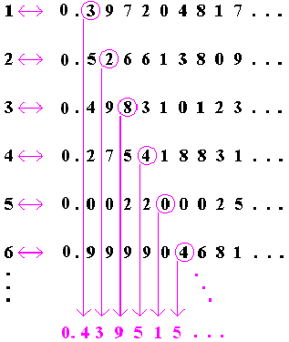

The infinite! No other question has ever moved so profoundly the spirit of man; no other idea has so fruitfully stimulated his intellect; yet no other concept stands in greater need of clarification than that of the infinite. 1 Infinity has many faces but however we look at the infinite, we are ultimately led back to mathematics, for it is here that the concept has its deepest roots. It is in mathematics that the concept of infinity has been developed and reshaped innumerable times, and where it finally celebrated its greatest triumph.2 Throughout the history of mathematics, the concept of infinity was regarded with a suspicious eye, as a concept better left alone,3 for infinity may seem like a concept that is impossible to bring within the confines of human understanding. Despite harsh criticism, the nineteenth century mathematician Georg Cantor accomplished this feat, however, and his mathematics makes infinity clear and consistent without diminishing its astounding grandeur. Cantor's work with infinity essentially originated from his deceptively innocent observation that we need not be able to count objects in sets (finite or infinite) in order to determine whether or not the sets are equinumerous. Cantor used his notion of one-to-one correspondence to examine various infinite sets and found that there are actually different "sizes" of infinity: the set of rational numbers and many subsets of the natural numbers are countably infinite, while the larger set of real numbers is uncountably infinite.4 Much to his surprise, Cantor even discovered that there are sets that are "more infinite" than the real numbers, thus indicating that there can be no "largest infinity." The only question that still remains is whether sets can only be countably or uncountably infinite (without an intermediate possibility)5 -a question whose answer perhaps became Cantor's greatest obsession and his greatest frustration. Unfortunately, answering this question was not simply a difficult task, but a hopeless one.6 Nevertheless, Cantor's inability to resolve this issue in no way diminishes his legacy, for unlike others before and of his time, he boldly set out to answer unasked questions about the infinite.
Historical Attitudes towards Infinity
Historically, our need to challenge the overwhelming notion of endlessness caused the concept of infinity to be regarded as inadmissible. As mathematicians made the transition from studying a strictly practical discipline to an intellectual one, however, they were able to turn their attention towards more abstract ventures such as understanding infinity. This transition first took place first in Greece around the sixth century B.C., and thus, the Greeks became the first to at least acknowledge the existence of infinity as an important issue in mathematics.7 Nonetheless, their aversion towards the concept of infinity is apparent even in the negative and somewhat pejorative term they used to describe it--apeiron--a Greek word that literally means "unbounded," but can also mean infinite, indefinite, or undefined.8 Although the Greeks acknowledge the existence of infinity, they did not make the leap towards confronting it; perhaps because they lacked the algebraic language that would enable them to do so.9 As a result, the Greeks had to be content to take refuge in their deeply rooted suspicion of the infinite.
The Greeks were simply unable to fully grasp the elusive nature of infinity, as is apparent in the famous paradoxes of Zeno, a philosopher who lived in Elea in the fourth century B.C.10 His arguments dealt with motion and continuity, and often seemed to be quite convincing. One of his arguments, by which he proposed that motion is impossible, deals with the concept of the infinitely small. Zeno maintained that in order for a runner to move from one point to another, he had to first cover half the distance between the two points, then half of the remaining distance, (which is one fourth of the total distance) then half of what remains next (? of the total distance), and so on, ad infinitum.11 Since this requires an infinite number of steps that need to be completed in a finite amount of time, Zeno argued that the runner would never reach his destination.
Performing an infinite number of tasks in a finite amount of time has always been a mathematician's dream. Perhaps this runner finally succeeded in the attempt to do so, for he does, of course, reach the end point after a finite lapse of time! Zeno himself recognized this fact, but was unable to find the faulty logic in his argument. The problem here lies in the intuitive assumption that the sum of an infinite number of numbers must always be infinite. For the infinite sum, or series,12
has the property that no matter how many of its terms we add up, we will never reach or exceed 1. (As we add more and more terms, however, the sum will get closer and closer to one.)13 Thus, it is clear that an infinite series may add up to a finite value, or, more mathematically stated, it may converge to a limit-a fact that the Greeks refused to accept.14
One reason why Zeno and his fellow Greeks failed to resolve the paradox is that they regarded the limit process itself as merely a potentially infinite process.15 Ever since Aristotle's time, mathematicians have made a careful distinction between what they called the potential infinite and the actual, completed infinite.16 The former involves a process that can be repeated again and again without end, but which, at any given stage, still encompasses only a finite number of repetitions.17 Thus, the set of natural numbers 1, 2, 3,
can be considered potentially infinite because every number clearly has a successor, yet at each stage of the counting process, we have enumerated only a finite number of elements, regardless of how high we have counted. On the other hand, the actual infinite involves a process that has already acquired an infinite number of repetitions at every stage. Thus, the set of integers, when arranged in their "natural" order of occurrence-
,-3, -2, -1, 0, 1, 2, 3,
-encompasses an actually infinite set, since there are already infinitely many integers present at every stage.18 Although mathematicians during this time were willing to accept the existence of potential infinities, they firmly rejected the existence of the latter. To quote Aristotle himself in his Physics: "The infinite has potential existence
There will not be an actual infinite."19 So great was Aristotle's influence that more than two thousand years later Carl Gauss (1777-1855) expressed the same view, attesting that, "the infinite is but a façon de parler."20
Even philosophers had trouble with the notion of a completed infinity, for they wondered how a completed infinity could exist in a finite universe. Specifically, the notion of the actual infinity numbers caused much controversy: if we consider numbers to be abstractions of physical properties, then where is the natural object or set of natural objects from which infinity could be extracted?21 Furthermore, if we instead consider numbers to be constructs of the human mind, then how could a finite mind construct a completed infinity? Well, the problem here is that while we do not experience the infinitude of time, space, or matter (even if they are infinite in extent or divisibility), neither do we experience large finite magnitudes.22 For example, take the number 10100, also known as a googol: we know exactly what it is, and can even list the million natural numbers which are its closest neighbors-yet, the human mind cannot actually visualize
10000000000000000000000000000000000000000000000000000000000000000000000000000000000000000000000000
of anything! Therefore, one may suggest that while we have no real experience of the infinitude anything, we have a perfectly good concept of infinity-the fact that we cannot visualize it does not disqualify us from using the concept intelligibly and accurately.23
of anything! Therefore, one may suggest that while we have no real experience of the infinitude anything, we have a perfectly good concept of infinity-the fact that we cannot visualize it does not disqualify us from using the concept intelligibly and accurately.23
Cantor's New Look at the Infinite
In actuality (no pun intended), the distinction between potential and actual infinities is meaningless. After all, couldn't one simply arrange the integers according to the sequence 0, 1, -1, 2, -2, 3, -3,
, in which case the integers would instead have to be considered potentially infinite?24 It would take a young and relatively unknown mathematician to point this out, after a centuries-long struggle to grope with and understand the concept of infinity. It was the mathematician Georg Cantor who, in the late 1800s, finally created a theory of the actual infinite, which, by its logical consistency, dispelled the well-established views of the Aristotelian doctrine proscribing actual, "completed" infinities.25 Although his work changed the whole course of mathematics, Cantor was rewarded with a lifetime of controversy, including condemnation by many of the most influential mathematicians of his time.
Cantor's new look at the infinite first involved his acceptance of the existence of the actual infinite. His ardent belief in the mathematical existence of actual infinity can even be seen in his definition of a set. Cantor insisted that a set, and an infinite set in particular, must be regarded as a totality: "A set is a Many which allows itself to be thought of as a One."27 Now, this begs the question, what is an infinite set? Quite simply, an infinite set can be described as a set that is not finite, which means that it does not contain a finite number of elements (the set of integers, for example, is an infinite set). Cantor was the first to study infinite sets systematically, and his discoveries in set theory actually rest on a deceptively simple idea that essentially resulted from his need for a means of comparing infinite sets.
The formal notion that Cantor used for comparing the sizes of infinite sets is that of a one-to-one correspondence.28 Many different metaphors have been used to illustrate Cantor's principle of establishing a one-to-one correspondence, but the concept is perhaps most effectively illustrated by the following example. Imagine a culture whose mathematical knowledge is so limited that people can only count to "three."29 Given this limitation, would it still be possible to determine if there is the same number of fingers on each hand? Well, we could do so by simply placing our fingers together, right thumb against left thumb, right index finger against left index finger, and so on, until we are left with a one-to-one match-up. In the end, each finger on one hand is matched with the corresponding finger on the other hand, and there are no fingers left over. Thus, even though we do not know how many fingers are on each hand, we still know that they are the same number.
Countably Infinite Sets
Figure 3. Naturals <=> Evens
As Cantor implied with his definition of an infinite set,41 we can play the same game with many of the subsets of the natural numbers-actually, with infinitely many subsets of the natural numbers! For example, we can form a one-to-one correspondence between the natural numbers and the multiples of five:42
Figure 4. Naturals <=> Multiples of 5
The set of prime numbers can also be matched in a one-to-one fashion with the natural numbers, despite the irregular gaps that exist between primes.43 We can even take out the first 37 natural numbers and conclude that the set whole numbers greater than 37 is equal in cardinality to the set of natural numbers!44 The following match-up should make this clear:45
Figure 5. Naturals <=> Integers > 37
Figure 7. Naturals <=> Integers
Figure 8. Listing the Rationals
Figure 9. Proving the Rationals Countable
Uncountably Infinite Sets
Each line segment is perpendicular to the segment AB, thus ensuring not only that each segment will pass through the segment AB itself, but that it will only pass through one point on the semicircle. As a result, the points of the segment AB are matched one-to-one with the points of the semicircle, thus proving that the segment and the semicircle have the same number of points.
Figure 13. "Listing" the Reals

Figure 14. Proving the Reals Uncountable
Cantor Enters the Transfinite Realm

The Continuum Hypothesis
Conclusion
Cantor devoted much of his energy and genius to understanding the elusive nature of infinity, but the clarification and demystification of the infinite was fully accomplished only in our own century--and we cannot even regard this realization as the final word.88 Like every science, mathematics has a refreshing air of incompleteness about it in that the resolution of one question merely opens the door to another. The goal of achieving an absolute and final understanding of science is an elusive one, but it is this very elusiveness that makes the study of any scientific discipline so stimulating.89 However, while most scientific accomplishments of newer generations not only build upon those of previous generations, but also tear down part of what has been previously established, there is remarkable permanence in mathematics. A theorem, correctly proved within the severe constraints of logic, is a theorem forever. It is in mathematics alone that each generation simply adds a new story to the old structure.90 Cantor's revolutionary work with infinite sets laid the groundwork for contemporary mathematics and is a prime example of mathematics' solidity in that it has lost none of its beauty or validity with the passage of time. Indeed, "no one will expel us from the paradise that Cantor has created."91
Notes
1 David Hilbert (1862-1943)
Source: Maor, Eli. To Infinity and Beyond: A Cultural History of the Infinite. New Jersey: Princeton University Press, 1991.
2 Maor, Eli. To Infinity and Beyond: A Cultural History of the Infinite. New Jersey: Princeton University Press, 1991.
3 ibid
4 Paulos, John Allen. "Infinite Sets," Beyond Numeracy: Ruminations of a Numbers Man. New York: Vintage Books, 1991.
5 Dunham, William. "The Non-Denumerability of the Continuum," Journey Through Genius: The Great Theorems of Mathematics. New York: Penguin Books, 1990.
6 ibid
7 Maor, Eli. To Infinity and Beyond: A Cultural History of the Infinite. New Jersey: Princeton University Press, 1991.
8 Rucker, Rudy. Infinity and the Mind: The Science and Philosophy of the Infinite. New Jersey: Princeton University Press, 1995.
9 ibid
10 ibid
11 ad infinitum is a Latin phrase meaning "to infinity"
12 This type of series is known as a geometric series, by definition, since it has a common ratio--each successive term is found by multiplying the previous term by some fixed amount (in our case, ½). Infinite geometric series are known to converge (sum to a finite number) when the common ratio is less than one.
13 Maor, Eli. To Infinity and Beyond: A Cultural History of the Infinite. New Jersey: Princeton University Press, 1991.
14 ibid
15 ibid
16 http://www.math.tamu.edu/~Aysu.Bilgim/inf.html
17 Maor, Eli. To Infinity and Beyond: A Cultural History of the Infinite. New Jersey: Princeton University Press, 1991.
18 ibid
19 ibid
20 ibid (façon de parler is French for "a way of speaking")
21 http://www.mathacademy.com/platonic_realms/minitext/infinity.html
22 http://www.earlham.edu/~peters/writing/infinity.htm
23 ibid
24 Maor, Eli. To Infinity and Beyond: A Cultural History of the Infinite. New Jersey: Princeton University Press, 1991.
25 http://www.mathacademy.com/platonic_realms/minitext/infinity.html
26 ibid
27 Rucker, Rudy. Infinity and the Mind: The Science and Philosophy of the Infinite. New Jersey: Princeton University Press, 1995.
28 http://www.math.lsa.umich.edu/~mathsch/courses/Infinity/Cardinality
29 The idea for this metaphor was developed from Dunham's Journey Through Genius: The Great Theorems of Mathematics. New York: Penguin Books, 1990.
30 http://www.c3.lanl.gov/mega-math/workbk/infinity/inbkgd.html
31 "iff" is short for "if and only if," which means that the statement and its converse is true. Thus, the statement can be rewritten as follows: if two finite sets have the same number of elements, a 1:1 correspondence between them can always be established. And the converse is just as true: if we can establish a 1:1 correspondence between two finite sets, we can conclude with absolute certainty that they have the same number of elements. (Of course, as Cantor discovered, this method also works for infinite sets.)
32 http://www.earlham.edu/~peters/writing/infinity.htm
33 http://www.math.lsa.umich.edu/~mathsch/courses/Infinity/Cardinality
34 Rucker, Rudy. Infinity and the Mind: The Science and Philosophy of the Infinite. New Jersey: Princeton University Press, 1995.
35 http://www.math.tamu.edu/~Aysu.Bilgim/inf.html
36 http://www.earlham.edu/~peters/writing/infinity.htm
37 Rucker, Rudy. Infinity and the Mind: The Science and Philosophy of the Infinite. New Jersey: Princeton University Press, 1995.
38 http://www.earlham.edu/~peters/writing/infinity.htm
39 To define the term "proper subset": Set A is a proper subset of set B if and only if all the members of A are also members of B, but not all the members of B are members of A.
40 diagram courtesy of http://www.mathacademy.com/platonic_realms/minitext/infinity.html
41 Cantor's definition of an infinite set can actually be considered a theorem in that every infinite set can be put into a one-to-one correspondence with at least one of its proper subsets. When taking into account the obvious fact that no finite set can be put into a 1:1 correspondence with any of its proper subsets, we have established the important result that only infinite sets possess this property--thus, it is the necessary and sufficient condition for infinite magnitude (this is why Cantor used the property as the defining notion of an infinite set). Inversely, its absence can be considered the defining condition of finitude.
Proof: (based on a proof seen at http://www.earlham.edu/~peters/writing/infapp.htm)
Let S be a set of any infinite cardinality. If S is countable, then we may produce a proper subset of S without reducing S's cardinality, since a denumerable set may have denumerably many members removed without reducing the cardinality of the infinite set (Theorem). Thus, since S and that proper subset have the same cardinality, we conclude that they can be put into a one-to-one correspondence. If S is instead uncountable, the result will be the same since we can move denumerably many members from an uncountably large set without reducing the cardinality of the original (Theorem). Q.E.D
42 diagram courtesy of http://www.mathacademy.com/platonic_realms/minitext/infinity.html
43 Paulos, John Allen. "Infinite Sets," Beyond Numeracy: Ruminations of a Numbers Man. New York: Vintage Books, 1991.
44 http://www.mathacademy.com/platonic_realms/minitext/infinity.html
45 diagram courtesy of http://www.mathacademy.com/platonic_realms/minitext/infinity.html
46 Alternatively, one may specifically state that "A denumberable set may have denumberably many members removed without reducing the cardinality of the original set." However, one must note that if the denumberably many members subtracted happened to comprise the entire membership of the original denumerable set, then clearly the result would not be a denumerable set. ("Denumerable" means countable. A countable set is one that can be put into a one-to-one correspondence with the counting numbers-the positive integers.) (Source: http://www.earlham.edu/~peters/writing/infapp.htm)
47 It is practically impossible to come across a discussion of infinite sets without a reference to Hilbert's creative analogy that puts set theory to life and makes some of its abstract concepts easy to understand, but a great site dealing specifically with "Hotel Infinity" is www.c3.lanl.gov/mega-math/workbk/infinity/inhotel.html
48 Maor, Eli. To Infinity and Beyond: A Cultural History of the Infinite. New Jersey: Princeton University Press, 1991.
49 For this particular correspondence, it can be checked that each natural number n is matched with its integer counterpart: [1 + (-1)n × (2n - 1)]/ 4
50 The set of natural numbers is sometimes considered to be the set of positive whole numbers, thus including the number 0 as well: 0, 1, 2, 3 This paper considers the set natural numbers to be simply the positive integers: 1, 2, 3 (without 0) since one naturally starts with the number 1 when counting. Of course, this variance does not affect any of the arguments presented in terms of the cardinalities of various infinite sets.
51 http://www.earlham.edu/~peters/writing/infapp.htm
52 In terms of notation, Cantor used the symbol to designate the cardinality of the natural numbers ( is the first letter of the Hebrew Alphabet, pronounced Aleph). Therefore, a set is countable iff its cardinality is either finite (all finite sets can be counted of course) or equal to . (Inversely, a set is uncountable iff its cardinality is greater than .)
53 Maor, Eli. To Infinity and Beyond: A Cultural History of the Infinite. New Jersey: Princeton University Press, 1991.
54 ibid
55 http://www.math.lsa.umich.edu/~mathsch/courses/Infinity/Cardinality
56 Maor, Eli. To Infinity and Beyond: A Cultural History of the Infinite. New Jersey: Princeton University Press, 1991.
57 Paulos, John Allen. "Infinite Sets," Beyond Numeracy: Ruminations of a Numbers Man. New York: Vintage Books, 1991.
58 diagram courtesy of http://www.mathacademy.com/platonic_realms/minitext/infinity.html
59 http://www.earlham.edu/~peters/writing/infapp.htm
60 Maor, Eli. To Infinity and Beyond: A Cultural History of the Infinite. New Jersey: Princeton University Press, 1991.
61 Dunham, William. "The Non-Denumerability of the Continuum," Journey Through Genius: The Great Theorems of Mathematics. New York: Penguin Books, 1990.
62 http://www.earlham.edu/~peters/writing/infapp.htm
63 ibid
64 The line segments get more horizontal as the distance between them and the line increases, but they will never actually be horizontal of course, thus ensuring that they will pass through the line at one point.
65 When arbitrarily choosing numbers for this proposed list one should take into account that some numbers actually have two representations. For example, ½ can be represented simply as 0.5000 or as 0.4999 --it must be decided whether numbers will be represented with a sequence of repeating 0's or 9's. These two representations of the same number result from the somewhat disturbing fact that 1 = 0.999 ! After all, we know that:
1/3 + 2/3 = 1
0.333
+ 0.666
= 0.999
More specifically, 0.999 is clearly the decimal expansion of some number (each nine fills a certain decimal place, and indicates a fraction that is part of the whole number itself). The first "9" is in the tenths place, and thus can be represented by 9/10; the second is in the hundredths place, and can be represented as 9/100, and so on. The number 0.999 itself is thus the sum of all these fractions:
0.999 = 9/10 + 9/100 + 9/1000 + 9/10000 +
As we add more and more terms, we are producing finite sums that can be thought of as approximations of the infinite sum. However, these partial sums get closer and closer to 1, and thus, by definition this limit 1 is the sum of the infinite list. Therefore, we have proof that 0.999 is (exactly) equal to 1! (Source: http://www.math.Isa.umich.edu/~mathsch/courses/Infinity/Equals1.shtml)
66 "On [0,1]" is read "on the closed interval [0,1]" which means that the interval contains all the numbers between (and including) 0 and 1.
67 To this fact some might say that we could simply add this number to our list. However, such reasoning fails to address the fundamental point of the argument and the proof by contradiction. Of course, even if we added our new number to the list, we could just use the same process to create another real number that is not on the list (infinitely many, perhaps). There is just no way to create a complete one-to-one correspondence between the real numbers and the natural numbers, as they have different cardinalities.
68 After Cantor had shown the nondenumerability of the continuum (actually, of any interval of real numbers) he then applied this fact to a familiar and difficult question that had long exasperated mathematicians--the existence of transcendental numbers (numbers that are not solutions to any algebraic equation with rational coefficients). It seems that transcendental numbers are relatively hard to come by, while the algebraic numbers (those numbers that can be solutions to an algebraic equation with rational coefficients) seem to constitute a vast set (Cantor actually proved that the set of algebraic numbers is countable). However, when Cantor set out to consider the seemingly rare transcendental numbers, first starting with an arbitrary interval (a, b) as he did when examining the real numbers, he showed that the transcendental numbers must vastly outnumber the algebraic numbers! This theorem is a very intriguing one, and Cantor accomplished the result indirectly--without exhibiting a single concrete example of a transcendental number! Instead, he "counted" the points of the interval and realized that the countable set of algebraic numbers contained in the interval were only responsible for a small part of this count. Where were all these additional real numbers coming from? They must be the transcendentals, which of course, must exist in overwhelming abundance (despite our inability to find them!). (Source for this information was Dunham's "The Non-Denumerability of the Continuum," Journey Through Genius: The Great Theorems of Mathematics. New York: Penguin Books, 1990.)
69 Paulos, John Allen. "Infinite Sets," Beyond Numeracy: Ruminations of a Numbers Man. New York: Vintage Books, 1991.
70 Dimensionality has nothing to do with the number of points a space contains.
71 Paulos, John Allen. "Infinite Sets," Beyond Numeracy: Ruminations of a Numbers Man. New York: Vintage Books, 1991.
72 Goldberg, Richard. Methods of Real Analysis. New York: Wiley & Sons, 1976.
73 Maor, Eli. To Infinity and Beyond: A Cultural History of the Infinite. New Jersey: Princeton University Press, 1991.
74 An interesting fact to mention: it turns out that the power set of any countable set, like the natural numbers, has the same cardinality as the set of real numbers!
75 This proof is based on the one presented at the site: http://www.mathacademy.com/platonic_realms/encyclop/articles/cantor_theorem.html
76 Of course, just because our alphabet is limited to 26 letters does NOT mean that the set X is finite, for these letters are just being used to represent the elements of the set (which are infinite)--indeed, we could continue using something like a1, b1, c1 etc.
77 diagram courtesy of http://www.mathacademy.com/platonic_realms/minitext/infinity.html
78 Here is another version of this proof (developed from one contained at http://www.earlham.edu/~peters/writing/infapp.htm) that tends to make the logic a bit easier to follow:
79 P(X) cannot be smaller than X since it contains all the "singletons" of X. For example, if the members of X are a, b, c then they can be put into a one-to-one correspondence with this subset of P(X): { {a}, {b}, {c} }
80 These sets and the cardinalities of these sets ( etc.) are known as the transfinite ("beyond the finite") cardinal numbers. (Source: Conway, John; Guy, Richard. The Book of Numbers. New York: Copernicus, 1996.)
81 Maor, Eli. To Infinity and Beyond: A Cultural History of the Infinite. New Jersey: Princeton University Press, 1991.
82 Paulos, John Allen. "Infinite Sets," Beyond Numeracy: Ruminations of a Numbers Man. New York: Vintage Books, 1991.
83 Euclid's Fifth Postulate states that only one line may be drawn passing through a given point that is parallel to a given line. When this postulate is taken to be true, we have the familiar Euclidean geometry that is taught in school. On the other hand, when it disregarded, we have many different systems of geometry (Non-Euclidean geometry) that are equally plausible.
84 Cantor's work with infinite sets assumes that the Continuum Hypothesis is true, however, Non-Cantorian set theory takes the Continuum Hypothesis as false.
85 Maor, Eli. To Infinity and Beyond: A Cultural History of the Infinite. New Jersey: Princeton University Press, 1991.
86 Paulos, John Allen. "Infinite Sets," Beyond Numeracy: Ruminations of a Numbers Man. New York: Vintage Books, 1991.
87 The mathematician Kant used the term "sublime" to refer to infinity. Source: http://www.earlham.edu/~peters/writing/infinity.htm
88 Maor, Eli. To Infinity and Beyond: A Cultural History of the Infinite. New Jersey: Princeton University Press, 1991.
89 ibid
90 The nineteenth-century mathematician Hermann Hankel expressed this view Source: Dunham's Journey Through Genius: The Great Theorems of Mathematics. New York: Penguin Books, 1990.
91 David Hilbert (whose quote begins this paper) Source: Dunham's Journey Through Genius: The Great Theorems of Mathematics. New York: Penguin Books, 1990.
Bibliography
Conway, John. Guy, Richard. The Book of Numbers. New York: Copernicus, 1996.
Dunham, William. Journey Through Genius: The Great Theorems of Mathematics. New York: Penguin Books, 1990.
Goldberg, Richard. Methods of Real Analysis. New York: Wiley & Sons, 1976.
Hersh, Reuben. What is Mathematics, Really? New York: Oxford University Press, 1997.
http://www.c3.lanl.gov/mega-math/workbk/infinity/inbkgd.html
http://www.earlham.edu/~peters/writing/infapp.htm
http://www.earlham.edu/~peters/writing/infinity.htm
http://www.mathacademy.com/platonic_realms/encyclop/articles/cantor_theorem.html
http://www.mathacademy.com/platonic_realms/minitext/infinity.html
http://www.math.lsa.umich.edu/~mathsch/courses/Infinity/Cardinality
http://www.math.lsa.umich.edu/~mathsch/courses/Infinity/Equals1.shtml
http://www.math.tamu.edu/~Aysu.Bilgim/inf.html
Maor, Eli. To Infinity and Beyond: A Cultural History of the Infinite. New Jersey: Princeton University Press, 1991.
Paulos, John Allen. Beyond Numeracy: Ruminations of a Numbers Man. New York: Vintage Books, 1991.
Rosen, Kenneth. Elementary Number Theory and its Applications. Reading, Massachusetts: Addison-Wesley Publishing Company, 1993.
Rucker, Rudy. Infinity and the Mind: The Science and Philosophy of the Infinite. New Jersey: Princeton University Press, 1995.
Now, the problem with infinity is much the same--we are not able to count that high! Cantor's insight, however, was that even though we cannot enumerate an infinite set, we can nonetheless determine if two (well-defined) infinite sets are the same "size."30 We can do this by simply applying the same procedure that we applied above to determine whether two hands have the same number of fingers without actually counting--by seeking to find a one-to-one correspondence between the elements of each set. This concept may seem quite obvious when dealing with finite sets-two finite sets have the same number of elements iff31 a one-to-one correspondence can be established between them--but, believe it or not, Cantor provided us with a logical and perfectly valid method for dealing with infinite sets! Yes, putting two infinite sets into a one-to-one correspondence is theoretically an infinite task, but we do not pretend that we can complete it in a finite amount of time--we only need to produce a rule-governed sequence for each set that runs through the members without omission or repetition.32 If we can do so, then we know that the nth term of one sequence will have a counterpart in the nth term of the other, and vice versa, thus guaranteeing a one-to-one correspondence throughout. Two infinite sets are said to have the same "size" (or cardinality) if they can be put into a one-to-one correspondence with each other.
The concept of one-to-one correspondence is an integral one in the set theory of infinite sets. In fact, Cantor even used the notion of a "one-to-one correspondence" to define an infinite set: "An infinite set is one that can be put into a one-to-one correspondence with a proper subset of itself."34 In other words, an infinite set has subsets (smaller groups within the whole set) whose members may be paired up one-to-one with the members of the whole set itself. To illustrate Cantor's succinct definition, let us examine a famous paradox discovered by Galileo in 1638.35 He noticed that the positive integers (also referred to as the "natural numbers") and their squares can be paired in the following way:
Now, reverting back to our notion of creating a one-to-one correspondence, since each natural number in the first list is directly paired with one and only one of the numbers in the second list, we can actually say that each list must have the same number of elements. Intuitively, however, it seems evident that since most natural numbers are not perfect squares, the set of perfect squares must be smaller than the set of natural numbers. In fact, as we move along the series of squares, the interval between members becomes increasingly large, and the ratio of perfect squares to natural numbers approaches zero!36 Furthermore, every number that occurs in the second list must also be somewhere in the first list since they are natural numbers as well. For Galileo, the upshot of this paradox was that "we can only infer that the totality of all numbers is infinite, and that the number of squares is infinite
; neither is the multitude of squares less than the totality of all numbers, nor the latter greater than the former."37
Galileo's paradox is only paradoxical in the sense that it violates our intuitions. We must remember, however, that our intuitions were cultivated by our experience with the more tractable domains of finite experience.38 Thus, we must realize that our "common sense" may often be inapplicable or false when dealing with infinite sets. Infinite sets simply do not behave like finite sets, but this does not mean infinity is an inconsistent notion. Though we would expect the set of squares to be smaller than the set of natural numbers, every positive integer in fact has a distinct perfect square, and every square number has a distinct natural number as its square root. Therefore, since the two sets can be put into one-to-one correspondence, they must have the same cardinality by definition--which means there are just as many perfect squares as there are natural numbers! Infinity may contradict our intuition, but it certainly does not contradict itself.
Countably Infinite Sets
The set of perfect squares is an example of a proper subset of the natural numbers since all its members belong to the set of natural numbers (it is a subset of the naturals) but it also omits some natural numbers (namely, those which are not perfect squares).39 Therefore, according to Cantor's definition of an infinite set, we should be able to establish a one-to-one correspondence between the perfect squares and the natural numbers, which, as we have shown, is indeed true. But what about other infinite sets? While one might not need a great deal of convincing to believe that the set of even numbers has the same size, or cardinality, as the set of odd numbers (the following pairing should make this clear: 1<=>2; 3<=>4; 5<=>6;
), we can actually prove that the set of even numbers (and the set of odd numbers) is just as numerous as the set of natural numbers! How can this be? For, clearly, the even numbers seem less numerous than the natural numbers--half as numerous to be precise--since we can obtain the evens by starting with the naturals and deleting every other member (the odds). Well, once again, our intuition gets us into trouble. The notion that the set of even numbers is half as numerous as the set of naturals would undoubtedly be true if the evens and the naturals were finite sets--but, of course, we know that there is no greatest natural or even number, and thus, that they are in fact infinite sets. Although any subset of a finite set will be smaller than the original set, an infinite set and its proper subset will always have the same size. The following match-up should make it clear that the evens and the naturals have the same cardinality since it establishes a one-to-one correspondence between them40:
As Cantor implied with his definition of an infinite set,41 we can play the same game with many of the subsets of the natural numbers-actually, with infinitely many subsets of the natural numbers! For example, we can form a one-to-one correspondence between the natural numbers and the multiples of five:42
The set of prime numbers can also be matched in a one-to-one fashion with the natural numbers, despite the irregular gaps that exist between primes.43 We can even take out the first 37 natural numbers and conclude that the set whole numbers greater than 37 is equal in cardinality to the set of natural numbers!44 The following match-up should make this clear:45
We may feel a bar of resistance to accepting the fact that we an remove some of the elements of an infinite set and still have just as many as we started with, but this is simply a remnant of our experience with finite sets (in which removing something results in a smaller set). In the realm of the infinite, "the whole" does not have to be greater than "the part." In fact, stating Cantor's definition in another way, we can say that a set is infinite if we can remove some of its elements without reducing its size.46
In general, an infinite set will not grow in cardinality if we add members to it either. This fact is best illustrated by the mathematician David Hilbert's (whose quotation appears in the introduction) famous story about his hotel that has an infinite number of rooms.47 One night a man walks into Hilbert's Hotel, hot, tired, and in need of a nice bed to sleep in, but much to his dismay he finds out that the hotel is full with infinitely many guests! Much to the latecomer's surprise, however, the owner was able to find him an empty room by simply awakening his guests and asking them to move to the next room (the occupant of room #1 would move to room #2, whose occupants would move to room #3, etc.). By shifting each occupant one room over, room #1 suddenly became vacated, and the tired man conveniently had a room in which to settle down for the night:
In a way, this famous anecdote tells the entire story of infinity--a story of intriguing paradoxes and seemingly impossible situations that have puzzled mankind for more than two millennia.48
Now let us examine an infinite set that is not a proper subset of the natural numbers--namely, the set of integers. Surely one might think that the set of integers must be greater in cardinality than the set of natural numbers, for, while the natural numbers are infinite in only one direction (positive), the integers are infinite in two directions (positive and negative). Thus, for each natural number there are two integers, suggesting that the set of integers is twice as big as the set of naturals. "Common sense" is clearly a very poor guide when dealing with infinity, however, for the following match-up does not support such a conclusion:
The very fact that we can match the integers one by one with the natural numbers attests to the reality that the set of integers is just as numerous as the set of natural numbers.49 The set of natural numbers is also referred to as the set of "counting numbers," since we use the positive integers to count.50 As a result, Cantor called any infinite set with the same cardinality as the natural (or counting) numbers "countable," or "denumerable."51 In other words, a set is countably infinite if there is some way to associate or match up its elements (with no leftovers) in a one-to-one fashion with the counting numbers.52 Inversely, an uncountably infinite set is one whose elements cannot be matched up with the counting numbers in such a manner.
At this point one may conclude that the denumerability of all the sets mentioned above is simply a result of the big gaps that exist between their members. There are gaps of one unit between the counting numbers and the integers, gaps of two units between the even and odd numbers, gaps of increasing magnitude between the squares (these gaps follow the sequence of odd numbers),53 and irregular gaps between the primes. So, we might conclude that any infinite set that has gaps of this sort can be matched on a one-to-one basis with the counting numbers, and is therefore denumerable.54 But what about a set like the rational numbers (the set of integers and fractions) where there are no such gaps between its members? The set of rational numbers is very dense in that between any two rationals, no matter how close, a third one can always be found--in fact, infinitely many others. One could even take, say, the number ½, and divide it by every rational number to get infinitely many more rational numbers, so it seems as if the rationals must be infinitely larger than the natural numbers.55 However, though the density of the rational numbers makes it more difficult to find a way to enumerate them according to any scheme, it is still possible to do so. Cantor showed that there is a way to do just that--to list all the rational numbers one by one, without even leaving a single one out! He did so by first arranging them in an infinite array56:
The first column consists of all the fractions whose denominator is 1, that is, all the natural numbers; the second row consists off all the fractions whose denominator is 2, and so forth. The rows are arranged in a similar manner by numerator instead: the first row consists of all the fractions whose numerator is 1, the second row consists of all the fractions whose numerator is 2, and so forth. Clearly, within each row the fractions are arranged by their magnitude (biggest to smallest).
Such a listing only gets us halfway there, however, for we still need to find a way to match up the rational numbers with the counting numbers. To do so, instead of looking at the numerators and denominators separately, why don't we take a look at the sum of the numerators and the denominators?57 First let us consider those rational numbers whose numerators and denominators have a sum of 2 (this is the smallest possible sum since no fraction exists with a numerator and a denominator whose sum is 1). There is only one of these--1/1--and we associate the integer 1 with it. Now consider those rationals the sum of whose numerators and denominators is 3. There are two--1/2 and 2/1--and we associate with them the integers 2 and 3, respectively. Next, we consider those rationals whose numerators and denominators sum to 4--1/3, 2/2, and 3/1--and so on. If we continue in this way, we will have traversed a path that looks much like the following.
When we follow along this path--one step to the right, then diagonally down, then one step down, then diagonally up, then again one step to the right, and so on ad infinitum--we will cover all the positive fractions, one by one. True, along our path we will encounter fractions that have already been met before (such as fractions that are not in "lowest terms"), but this does not affect our argument. Technically, this matching violates the conditions for a strict one-to-one correspondence, but if we leave the duplicates in the enumeration, we are simply proving that the rationals plus the duplicates is still no greater in cardinality than the naturals.59 Now, this means that the rationals are at most as numerous as the naturals. However, since the naturals are a proper subset of the rationals, we also know that the rationals are at least as numerous as the naturals. Therefore, we can conclude that the rationals are indeed exactly as numerous as the naturals! Furthermore, we can conclude that the same goes for the negative (nonpositive) rational numbers, even though this listing only accounts for the positive rational numbers. To demonstrate this, we can use the list we already established and simply alternate between the positive and the negative rationals, as we did previously with the integers:
The discovery that the set of rational numbers is countable left such a deep impression on Cantor that he exclaimed, "I see it, but I don't believe it!"60 Indeed, the concept of infinity is both strange and enlightening, in that our ideas about the foundations of even a relatively simple thing as numbers gets turned upside-down.
Uncountably Infinite Sets
At this point one may be tempted to simply conclude that, "infinity is infinity," or, in other words, that all infinite sets have the same cardinality. It seems that it is possible to create a one-to-one correspondence between any two infinite sets--after all, if we start matching them up, since we will never run out of either set, we can just continue doing so forever. The counter-argument to this line of reasoning, however, is how do we know that such a matching has used up all the elements of both sets? Although we might begin to suspect (as Cantor himself originally had)61 that perhaps all infinite sets are countable (have the same cardinality as the counting numbers), Cantor actually showed that there are sets whose elements are so dense that they cannot be counted. One such set is the set of points along an infinite line--the number line.62 These points, in turn, correspond to our real number system, thus implying that the real numbers themselves are not countable! These two sets form what Cantor called a continuum, (the linear continuum and the numerical continuum) whose nondenumerable cardinality he simply notated as C.63
To show that the real numbers cannot be counted, Cantor first established an astonishing fact: there are as many points along an infinite [straight] line as there are on a finite segment of it! Though this may be hard to believe, the proof itself is relatively simple:
Each line segment is perpendicular to the segment AB, thus ensuring not only that each segment will pass through the segment AB itself, but that it will only pass through one point on the semicircle. As a result, the points of the segment AB are matched one-to-one with the points of the semicircle, thus proving that the segment and the semicircle have the same number of points.
Now each line segment is drawn from the center of the same semicircle to the line, again ensuring that each segment passes through only one point on the circle and only one point on the line.64 Thus, the points of the semicircle are now matched one-to-one with the points of the entire line. Therefore, we can conclude that a finite line segment and an infinite line have exactly the same number of points!
Having shown this, all that remained for Cantor to do was to show that the points along a finite line segment could not be counted. As his finite line segment, he chose the interval on the number line [0,1] (the unit segment), so each point along this segment corresponds to a decimal between 0 and 1. Cantor then proceeded with his celebrated "diagonal" argument in order to prove that the real numbers are not countable. Often when trying to prove a negative statement such as this, it is helpful to approach it indirectly with a proof by contradiction. Thus, we begin by assuming, for argument's sake, that the real numbers are indeed countable. This would mean that we could form a one-to-one correspondence between the natural numbers and the real numbers. We can represent such a list symbolically for a more technical proof, but just to be specific, suppose that our arbitrary match-up looks like this:65
With this list, we are supposing that we eventually have every real number on [0,1]66 running down the right-hand side of the list in Figure 13, with its corresponding natural number next to it on the left-hand side of the list. But, to continue the proof, how can we be sure that, no matter how it is continued, this infinite list (or any other list) is certain to leave out some real numbers?
Well, as Cantor pointed out, we can show that there exists at least one real number that cannot be on the list. To do so, we must create a new real number between 0 and 1 whose first decimal place digit is different from that of the first number on our list. Now let our new number's second decimal place digit be different from the highlighted digit of the second number listed in Figure 13 (the digit in the second decimal place). Similarly, let our new number's third decimal place digit be different from the highlighted digit (that in the third decimal place) of the third number on our list, and so on. To the same effect, we could simply consider the real number on [0,1] whose nth decimal place is occupied by a digit 1 more than the (circled) digit in the nth decimal place of the nth number on the list:
Continuing this process leaves us with the number beginning 0.439515
since its first digit 4 is one more than 3, 3 is one more than 2, 9 is one more than 8, and so on. Now the question is, does this number appear somewhere on our list? Is it, for example, the 100th row? No, because its hundredth digit differs from the hundredth digit of the 100th row. In fact, this number can't appear anywhere on the list since, because of the way it was constructed, it differs from the first number on the list in at least the first decimal place, from the second number in at least the second decimal place, and so on. Even if one argued that the number could appear in the nth row of the list, we know that the number will be different from the nth number in at least the nth decimal place, and thus, does not appear there or anywhere on the list.67 However, this fact contradicts our assumption that we have exhaustively listed all the real numbers on [0, 1]. No matter what infinite list of real numbers anyone presents to us, we can always, by a similar technique, construct a real number that will not be accounted for on that list. Therefore, our assumption is false-the real numbers cannot be put into a one-to-one correspondence with the naturals-thus, we can conclude, with absolute certainty, that the real numbers are not countable. To take this a step further, since we know that the reals are at least as numerous as the naturals and clearly cannot have the smaller cardinality, we can conclude that the reals possess a higher cardinality than the natural numbers and are uncountably infinite.68
Cantor Enters the Transfinite Realm
With his proof of the nondenumerability of the continuum, Cantor created, in effect, a hierarchy of infinities.69 There is no infinite set with a cardinality that is less than that of the natural numbers (), and all sets that are uncountable (have the same cardinality as the real numbers) are, in effect, "more infinite" than all the countable sets. At this point one may be wondering if any sets exist with a cardinality that is greater than the real numbers. It may seem reasonable to presume that C (the cardinality of the real numbers) is the greatest possible cardinality. After all, Cantor could easily show that the points contained on a line, all the points contained in the entire plane, and even those contained in a three-dimensional cube all had the same cardinality as C.70 However, as Cantor himself soon discovered, it turns out that there are sets that are greater in cardinality than the set of real numbers!71
Some of these sets are power sets. A power set is simply the set of all subsets of a given set. For example, the power set of the set {a, b, c} consists of the subsets {a}, {b}, {c}, {a, b}, {a, c}, and {b, c}, to which we must add the "empty" or "null" set { }, and the set {a, b, c} itself. Thus, from the original set of three elements we get a new set of eight (= 23) elements. (If a finite set has n elements, then its power set contains 2n elements).73 In fact, Cantor was able to conclude that the power set of any given set always has more elements than the original set. Cantor's Theorem (as it is called today) shows that given any set, we can always construct a set that has a greater cardinality.74
The proof of Cantor's Theorem has a similar flavor to his proof of the non-denumerability of the real numbers, but it is somewhat more abstract.75 Once again, we will use a proof by contradiction, for we will first assume that there is a largest infinite set, and then try to demonstrate that there must be one even larger (the power set). Let X be an arbitrary infinite set (of any cardinality) which we can represent as X = {a, b, c, d, e,
}.76 Now let us assume that the members of X can be put into a one-to-one correspondence with its power set which can be represented by P(X) = { {e}, {a, b}, {b, c, e}, {a, c}, {a}, . . .}. Such an arbitrary match-up would look something like this:77
Now let us consider the different ways that a member of X could be paired with the subsets of X.78 Notice that some of the elements of X are matched with subsets that contain them. For example, here the element e is matched with the subset {a, c, e}, of which it is a member. Also notice that some of the elements of X are matched with subsets that do not contain them, such as the element d, which is matched with the subset {b, e}, of which it is not a member.
Let us consider the set of elements of X that are not matched up with subsets that contain them. This set, which we'll call S, is clearly a subset of X; thus it must appear somewhere in our match-up listing above. However, what could the element of X be that matches with S? It cannot be a member of S, since S was specifically constructed to contain only those elements of X which do not match up to the sets containing them. So what happens if the element of X that matches up with S is not contained in S? Well, then it must be contained in S, again by the definition of S! Clearly, this is a contradiction. The existence of this contradiction forces us to believe that no element of X can be matched with this subset. Now, this means that X and P(X) cannot be put into a one-to-one correspondence, thus indicating that they cannot have the same cardinality. Therefore, we can conclude that one set must be larger than the other. Since X can be put into a one-to-one correspondence with a proper subset of P(X),79 we can conclude that the cardinality of P(X) must therefore be larger than that of X. Hence, Cantor's Theorem is indeed true and, as a result, there can be no "largest infinity" and the kinds of infinity are therefore infinite!80
The Continuum Hypothesis
Cantor was not content to stop here-the next question that presented itself to Cantor was whether or not a set existed with a cardinality between (countable sets like the natural numbers) and C (uncountable sets like the real numbers). Cantor speculated that such a set did not exist (suggesting that the cardinality of the real numbers should therefore be indicated by the symbol ) but he was unable to prove his conjecture.81 This speculation has come to be called the Continuum Hypothesis, and has never been proved. One compelling reason is that, as the mathematicians Gödel and Paul Cohen have shown, it is independent of the other postulates of set theory.82 Thus, much like Euclid's famous Parallel Postulate,83 both the Continuum Hypothesis and its negation are consistent with our present understanding of sets. As a result, the hypothesis turned out to be both true and false--depending on what assumptions one started with!84 This startling discovery sent shock waves through the mathematical world whose effects are still being felt today.85 Of course, a new postulate might decide the issue, but despite the attempts of many eminent logicians and set theorists, it remains undiscovered.86
Conclusion
Infinity has been a perennial source of mathematical and philosophical wonder. The sublimity87 of the infinite is a perfect example of how mathematics possesses not only powerful truth, but also austere beauty. Mathematics itself could hardly exist without the notion of infinity, for it is inherent in numbers, which form the basis of practically all mathematics. Thus, while the immensity of infinity may be but a humbling vision to some, for the mathematician, infinity is an invigorating reality. The concept of infinity may be hard to grasp, but understanding infinity does not deprive it of its ordained majesty.
Cantor devoted much of his energy and genius to understanding the elusive nature of infinity, but the clarification and demystification of the infinite was fully accomplished only in our own century--and we cannot even regard this realization as the final word.88 Like every science, mathematics has a refreshing air of incompleteness about it in that the resolution of one question merely opens the door to another. The goal of achieving an absolute and final understanding of science is an elusive one, but it is this very elusiveness that makes the study of any scientific discipline so stimulating.89 However, while most scientific accomplishments of newer generations not only build upon those of previous generations, but also tear down part of what has been previously established, there is remarkable permanence in mathematics. A theorem, correctly proved within the severe constraints of logic, is a theorem forever. It is in mathematics alone that each generation simply adds a new story to the old structure.90 Cantor's revolutionary work with infinite sets laid the groundwork for contemporary mathematics and is a prime example of mathematics' solidity in that it has lost none of its beauty or validity with the passage of time. Indeed, "no one will expel us from the paradise that Cantor has created."91
1 David Hilbert (1862-1943)
Source: Maor, Eli. To Infinity and Beyond: A Cultural History of the Infinite. New Jersey: Princeton University Press, 1991.
2 Maor, Eli. To Infinity and Beyond: A Cultural History of the Infinite. New Jersey: Princeton University Press, 1991.
3 ibid
4 Paulos, John Allen. "Infinite Sets," Beyond Numeracy: Ruminations of a Numbers Man. New York: Vintage Books, 1991.
5 Dunham, William. "The Non-Denumerability of the Continuum," Journey Through Genius: The Great Theorems of Mathematics. New York: Penguin Books, 1990.
6 ibid
7 Maor, Eli. To Infinity and Beyond: A Cultural History of the Infinite. New Jersey: Princeton University Press, 1991.
8 Rucker, Rudy. Infinity and the Mind: The Science and Philosophy of the Infinite. New Jersey: Princeton University Press, 1995.
9 ibid
10 ibid
11 ad infinitum is a Latin phrase meaning "to infinity"
12 This type of series is known as a geometric series, by definition, since it has a common ratio--each successive term is found by multiplying the previous term by some fixed amount (in our case, ½). Infinite geometric series are known to converge (sum to a finite number) when the common ratio is less than one.
13 Maor, Eli. To Infinity and Beyond: A Cultural History of the Infinite. New Jersey: Princeton University Press, 1991.
14 ibid
15 ibid
16 http://www.math.tamu.edu/~Aysu.Bilgim/inf.html
17 Maor, Eli. To Infinity and Beyond: A Cultural History of the Infinite. New Jersey: Princeton University Press, 1991.
18 ibid
19 ibid
20 ibid (façon de parler is French for "a way of speaking")
21 http://www.mathacademy.com/platonic_realms/minitext/infinity.html
22 http://www.earlham.edu/~peters/writing/infinity.htm
23 ibid
24 Maor, Eli. To Infinity and Beyond: A Cultural History of the Infinite. New Jersey: Princeton University Press, 1991.
25 http://www.mathacademy.com/platonic_realms/minitext/infinity.html
26 ibid
27 Rucker, Rudy. Infinity and the Mind: The Science and Philosophy of the Infinite. New Jersey: Princeton University Press, 1995.
28 http://www.math.lsa.umich.edu/~mathsch/courses/Infinity/Cardinality
29 The idea for this metaphor was developed from Dunham's Journey Through Genius: The Great Theorems of Mathematics. New York: Penguin Books, 1990.
30 http://www.c3.lanl.gov/mega-math/workbk/infinity/inbkgd.html
31 "iff" is short for "if and only if," which means that the statement and its converse is true. Thus, the statement can be rewritten as follows: if two finite sets have the same number of elements, a 1:1 correspondence between them can always be established. And the converse is just as true: if we can establish a 1:1 correspondence between two finite sets, we can conclude with absolute certainty that they have the same number of elements. (Of course, as Cantor discovered, this method also works for infinite sets.)
32 http://www.earlham.edu/~peters/writing/infinity.htm
33 http://www.math.lsa.umich.edu/~mathsch/courses/Infinity/Cardinality
34 Rucker, Rudy. Infinity and the Mind: The Science and Philosophy of the Infinite. New Jersey: Princeton University Press, 1995.
35 http://www.math.tamu.edu/~Aysu.Bilgim/inf.html
36 http://www.earlham.edu/~peters/writing/infinity.htm
37 Rucker, Rudy. Infinity and the Mind: The Science and Philosophy of the Infinite. New Jersey: Princeton University Press, 1995.
38 http://www.earlham.edu/~peters/writing/infinity.htm
39 To define the term "proper subset": Set A is a proper subset of set B if and only if all the members of A are also members of B, but not all the members of B are members of A.
40 diagram courtesy of http://www.mathacademy.com/platonic_realms/minitext/infinity.html
41 Cantor's definition of an infinite set can actually be considered a theorem in that every infinite set can be put into a one-to-one correspondence with at least one of its proper subsets. When taking into account the obvious fact that no finite set can be put into a 1:1 correspondence with any of its proper subsets, we have established the important result that only infinite sets possess this property--thus, it is the necessary and sufficient condition for infinite magnitude (this is why Cantor used the property as the defining notion of an infinite set). Inversely, its absence can be considered the defining condition of finitude.
Proof: (based on a proof seen at http://www.earlham.edu/~peters/writing/infapp.htm)
Let S be a set of any infinite cardinality. If S is countable, then we may produce a proper subset of S without reducing S's cardinality, since a denumerable set may have denumerably many members removed without reducing the cardinality of the infinite set (Theorem). Thus, since S and that proper subset have the same cardinality, we conclude that they can be put into a one-to-one correspondence. If S is instead uncountable, the result will be the same since we can move denumerably many members from an uncountably large set without reducing the cardinality of the original (Theorem). Q.E.D
42 diagram courtesy of http://www.mathacademy.com/platonic_realms/minitext/infinity.html
43 Paulos, John Allen. "Infinite Sets," Beyond Numeracy: Ruminations of a Numbers Man. New York: Vintage Books, 1991.
44 http://www.mathacademy.com/platonic_realms/minitext/infinity.html
45 diagram courtesy of http://www.mathacademy.com/platonic_realms/minitext/infinity.html
46 Alternatively, one may specifically state that "A denumberable set may have denumberably many members removed without reducing the cardinality of the original set." However, one must note that if the denumberably many members subtracted happened to comprise the entire membership of the original denumerable set, then clearly the result would not be a denumerable set. ("Denumerable" means countable. A countable set is one that can be put into a one-to-one correspondence with the counting numbers-the positive integers.) (Source: http://www.earlham.edu/~peters/writing/infapp.htm)
47 It is practically impossible to come across a discussion of infinite sets without a reference to Hilbert's creative analogy that puts set theory to life and makes some of its abstract concepts easy to understand, but a great site dealing specifically with "Hotel Infinity" is www.c3.lanl.gov/mega-math/workbk/infinity/inhotel.html
48 Maor, Eli. To Infinity and Beyond: A Cultural History of the Infinite. New Jersey: Princeton University Press, 1991.
49 For this particular correspondence, it can be checked that each natural number n is matched with its integer counterpart: [1 + (-1)n × (2n - 1)]/ 4
50 The set of natural numbers is sometimes considered to be the set of positive whole numbers, thus including the number 0 as well: 0, 1, 2, 3 This paper considers the set natural numbers to be simply the positive integers: 1, 2, 3 (without 0) since one naturally starts with the number 1 when counting. Of course, this variance does not affect any of the arguments presented in terms of the cardinalities of various infinite sets.
51 http://www.earlham.edu/~peters/writing/infapp.htm
52 In terms of notation, Cantor used the symbol to designate the cardinality of the natural numbers ( is the first letter of the Hebrew Alphabet, pronounced Aleph). Therefore, a set is countable iff its cardinality is either finite (all finite sets can be counted of course) or equal to . (Inversely, a set is uncountable iff its cardinality is greater than .)
53 Maor, Eli. To Infinity and Beyond: A Cultural History of the Infinite. New Jersey: Princeton University Press, 1991.
54 ibid
55 http://www.math.lsa.umich.edu/~mathsch/courses/Infinity/Cardinality
56 Maor, Eli. To Infinity and Beyond: A Cultural History of the Infinite. New Jersey: Princeton University Press, 1991.
57 Paulos, John Allen. "Infinite Sets," Beyond Numeracy: Ruminations of a Numbers Man. New York: Vintage Books, 1991.
58 diagram courtesy of http://www.mathacademy.com/platonic_realms/minitext/infinity.html
59 http://www.earlham.edu/~peters/writing/infapp.htm
60 Maor, Eli. To Infinity and Beyond: A Cultural History of the Infinite. New Jersey: Princeton University Press, 1991.
61 Dunham, William. "The Non-Denumerability of the Continuum," Journey Through Genius: The Great Theorems of Mathematics. New York: Penguin Books, 1990.
62 http://www.earlham.edu/~peters/writing/infapp.htm
63 ibid
64 The line segments get more horizontal as the distance between them and the line increases, but they will never actually be horizontal of course, thus ensuring that they will pass through the line at one point.
65 When arbitrarily choosing numbers for this proposed list one should take into account that some numbers actually have two representations. For example, ½ can be represented simply as 0.5000 or as 0.4999 --it must be decided whether numbers will be represented with a sequence of repeating 0's or 9's. These two representations of the same number result from the somewhat disturbing fact that 1 = 0.999 ! After all, we know that:
More specifically, 0.999 is clearly the decimal expansion of some number (each nine fills a certain decimal place, and indicates a fraction that is part of the whole number itself). The first "9" is in the tenths place, and thus can be represented by 9/10; the second is in the hundredths place, and can be represented as 9/100, and so on. The number 0.999 itself is thus the sum of all these fractions:
As we add more and more terms, we are producing finite sums that can be thought of as approximations of the infinite sum. However, these partial sums get closer and closer to 1, and thus, by definition this limit 1 is the sum of the infinite list. Therefore, we have proof that 0.999 is (exactly) equal to 1! (Source: http://www.math.Isa.umich.edu/~mathsch/courses/Infinity/Equals1.shtml)
66 "On [0,1]" is read "on the closed interval [0,1]" which means that the interval contains all the numbers between (and including) 0 and 1.
67 To this fact some might say that we could simply add this number to our list. However, such reasoning fails to address the fundamental point of the argument and the proof by contradiction. Of course, even if we added our new number to the list, we could just use the same process to create another real number that is not on the list (infinitely many, perhaps). There is just no way to create a complete one-to-one correspondence between the real numbers and the natural numbers, as they have different cardinalities.
68 After Cantor had shown the nondenumerability of the continuum (actually, of any interval of real numbers) he then applied this fact to a familiar and difficult question that had long exasperated mathematicians--the existence of transcendental numbers (numbers that are not solutions to any algebraic equation with rational coefficients). It seems that transcendental numbers are relatively hard to come by, while the algebraic numbers (those numbers that can be solutions to an algebraic equation with rational coefficients) seem to constitute a vast set (Cantor actually proved that the set of algebraic numbers is countable). However, when Cantor set out to consider the seemingly rare transcendental numbers, first starting with an arbitrary interval (a, b) as he did when examining the real numbers, he showed that the transcendental numbers must vastly outnumber the algebraic numbers! This theorem is a very intriguing one, and Cantor accomplished the result indirectly--without exhibiting a single concrete example of a transcendental number! Instead, he "counted" the points of the interval and realized that the countable set of algebraic numbers contained in the interval were only responsible for a small part of this count. Where were all these additional real numbers coming from? They must be the transcendentals, which of course, must exist in overwhelming abundance (despite our inability to find them!). (Source for this information was Dunham's "The Non-Denumerability of the Continuum," Journey Through Genius: The Great Theorems of Mathematics. New York: Penguin Books, 1990.)
69 Paulos, John Allen. "Infinite Sets," Beyond Numeracy: Ruminations of a Numbers Man. New York: Vintage Books, 1991.
70 Dimensionality has nothing to do with the number of points a space contains.
Though it may be quite mind-boggling for us to think of something more numerous than the set of all points on a line, as Cantor pointed out, we are dealing largely with a thought process--with the ability of our mind to conceive such sets--whether or not such sets actually exist in the physical sense is quite irrelevant to the issue. Perhaps it is this notion that the critics of Cantor's revolutionary work failed to understand.
71 Paulos, John Allen. "Infinite Sets," Beyond Numeracy: Ruminations of a Numbers Man. New York: Vintage Books, 1991.
72 Goldberg, Richard. Methods of Real Analysis. New York: Wiley & Sons, 1976.
73 Maor, Eli. To Infinity and Beyond: A Cultural History of the Infinite. New Jersey: Princeton University Press, 1991.
74 An interesting fact to mention: it turns out that the power set of any countable set, like the natural numbers, has the same cardinality as the set of real numbers!
75 This proof is based on the one presented at the site: http://www.mathacademy.com/platonic_realms/encyclop/articles/cantor_theorem.html
76 Of course, just because our alphabet is limited to 26 letters does NOT mean that the set X is finite, for these letters are just being used to represent the elements of the set (which are infinite)--indeed, we could continue using something like a1, b1, c1 etc.
77 diagram courtesy of http://www.mathacademy.com/platonic_realms/minitext/infinity.html
78 Here is another version of this proof (developed from one contained at http://www.earlham.edu/~peters/writing/infapp.htm) that tends to make the logic a bit easier to follow:
Let us say that if a member of X is paired with a subset of X of which it is not a member, then it is hungry. Likewise, let us say that if a member of X is paired with a subset of X of which it happens to be a member, then it is full. Now, let H be the set of hungry members of X. Clearly, H is one of the subsets of X, so it must appear somewhere in our match-up listing above. H must be matched with one of the members of H, which we'll call x. Now the question is, is x hungry or full? If x is full, then x is a member of the set to which it is paired, which is H, but that would make it hungry. So, if x is hungry, then it is not a member of the set to which it is paired, which is H, but that would make it full. So if x is happy, then it is sad; if x is sad, then it is happy: our assumption implies a contradiction and is therefore false
79 P(X) cannot be smaller than X since it contains all the "singletons" of X. For example, if the members of X are a, b, c then they can be put into a one-to-one correspondence with this subset of P(X): { {a}, {b}, {c} }
80 These sets and the cardinalities of these sets ( etc.) are known as the transfinite ("beyond the finite") cardinal numbers. (Source: Conway, John; Guy, Richard. The Book of Numbers. New York: Copernicus, 1996.)
81 Maor, Eli. To Infinity and Beyond: A Cultural History of the Infinite. New Jersey: Princeton University Press, 1991.
82 Paulos, John Allen. "Infinite Sets," Beyond Numeracy: Ruminations of a Numbers Man. New York: Vintage Books, 1991.
83 Euclid's Fifth Postulate states that only one line may be drawn passing through a given point that is parallel to a given line. When this postulate is taken to be true, we have the familiar Euclidean geometry that is taught in school. On the other hand, when it disregarded, we have many different systems of geometry (Non-Euclidean geometry) that are equally plausible.
84 Cantor's work with infinite sets assumes that the Continuum Hypothesis is true, however, Non-Cantorian set theory takes the Continuum Hypothesis as false.
85 Maor, Eli. To Infinity and Beyond: A Cultural History of the Infinite. New Jersey: Princeton University Press, 1991.
86 Paulos, John Allen. "Infinite Sets," Beyond Numeracy: Ruminations of a Numbers Man. New York: Vintage Books, 1991.
87 The mathematician Kant used the term "sublime" to refer to infinity. Source: http://www.earlham.edu/~peters/writing/infinity.htm
88 Maor, Eli. To Infinity and Beyond: A Cultural History of the Infinite. New Jersey: Princeton University Press, 1991.
89 ibid
90 The nineteenth-century mathematician Hermann Hankel expressed this view Source: Dunham's Journey Through Genius: The Great Theorems of Mathematics. New York: Penguin Books, 1990.
91 David Hilbert (whose quote begins this paper) Source: Dunham's Journey Through Genius: The Great Theorems of Mathematics. New York: Penguin Books, 1990.
Conway, John. Guy, Richard. The Book of Numbers. New York: Copernicus, 1996.
Dunham, William. Journey Through Genius: The Great Theorems of Mathematics. New York: Penguin Books, 1990.
Goldberg, Richard. Methods of Real Analysis. New York: Wiley & Sons, 1976.
Hersh, Reuben. What is Mathematics, Really? New York: Oxford University Press, 1997.
http://www.c3.lanl.gov/mega-math/workbk/infinity/inbkgd.html
http://www.earlham.edu/~peters/writing/infapp.htm
http://www.earlham.edu/~peters/writing/infinity.htm
http://www.mathacademy.com/platonic_realms/encyclop/articles/cantor_theorem.html
http://www.mathacademy.com/platonic_realms/minitext/infinity.html
http://www.math.lsa.umich.edu/~mathsch/courses/Infinity/Cardinality
http://www.math.lsa.umich.edu/~mathsch/courses/Infinity/Equals1.shtml
http://www.math.tamu.edu/~Aysu.Bilgim/inf.html
Maor, Eli. To Infinity and Beyond: A Cultural History of the Infinite. New Jersey: Princeton University Press, 1991.
Paulos, John Allen. Beyond Numeracy: Ruminations of a Numbers Man. New York: Vintage Books, 1991.
Rosen, Kenneth. Elementary Number Theory and its Applications. Reading, Massachusetts: Addison-Wesley Publishing Company, 1993.
Rucker, Rudy. Infinity and the Mind: The Science and Philosophy of the Infinite. New Jersey: Princeton University Press, 1995.
| Comments? Send e-mail. | Back to top | Go back to Home Page | Go back to Contents |